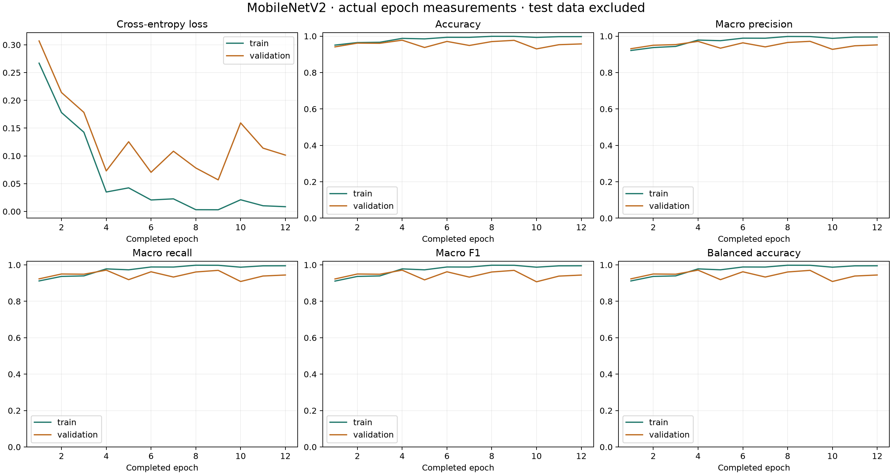

Generated 2026-11-07T00:56:39.435278+00:00. Controlled training and test study complete; this MobileNetV2 candidate has not been promoted. No field-accuracy or food-safety guarantee.
3,000 / 3,000 age images saved from 30 physical eggs.
| Class | Saved / target | Planned unique eggs |
|---|---|---|
| Day 16 | 1500 / 1,500 | 20 |
| Day 18 | 1500 / 1,500 | 10 |
| Retained Reject | 3814 | Unknown public-source identities; 0 confirmed physical Reject eggs |
The new age images are real EMEET camera frames. Repeated views and augmented inputs are not new independent eggs. All old age datasets are excluded from this study. Retained Reject images are source-derived public crops, not new EMEET captures or 3,814 independent eggs. Their original Reject/Unfertilized annotations and image-family partitions are preserved; both annotations map to the requested Reject output. Attribution: Pat, Balut Eggs Project v8, CC BY 4.0 according to the archived source license.

Epoch curves and checkpoint tables record the actual GPU training measurements. CPU serving verification is reported separately.
Exact training recipe · Every measured epoch
Accuracy: 0.9878 · Macro F1: 0.9781 · Balanced accuracy: 0.9781 · Weighted F1: 0.9878
| Class | Images | TP | FP | FN | Precision | Recall | F1 |
|---|---|---|---|---|---|---|---|
| Day 16 | 900 | 885 | 44 | 15 | 0.9526 | 0.9833 | 0.9677 |
| Day 18 | 900 | 856 | 15 | 44 | 0.9828 | 0.9511 | 0.9667 |
| Reject | 3033 | 3033 | 0 | 0 | 1.0000 | 1.0000 | 1.0000 |
Raw confusion matrix: every evaluated image included.
| Actual / predicted | Day 16 | Day 18 | Reject |
|---|---|---|---|
| Day 16 | 885 | 15 | 0 |
| Day 18 | 44 | 856 | 0 |
| Reject | 0 | 0 | 3033 |
Accuracy: 0.9778 · Macro F1: 0.9711 · Balanced accuracy: 0.9711 · Weighted F1: 0.9778
| Class | Images | TP | FP | FN | Precision | Recall | F1 |
|---|---|---|---|---|---|---|---|
| Day 16 | 300 | 284 | 10 | 16 | 0.9660 | 0.9467 | 0.9562 |
| Day 18 | 300 | 290 | 16 | 10 | 0.9477 | 0.9667 | 0.9571 |
| Reject | 570 | 570 | 0 | 0 | 1.0000 | 1.0000 | 1.0000 |
Raw confusion matrix: every evaluated image included.
| Actual / predicted | Day 16 | Day 18 | Reject |
|---|---|---|---|
| Day 16 | 284 | 16 | 0 |
| Day 18 | 10 | 290 | 0 |
| Reject | 0 | 0 | 570 |
CPU PyTorch and exported ONNX class predictions agree for all 6,003 development images. Maximum score difference: 6.2704086e-05. Training epoch logs used GPU arithmetic; the scanner uses CPU float32. GPU versus CPU raw predictions differ on 2 development images. CPU validation accuracy: 97.78%; macro F1: 97.11%.
| Validation truth | Images | Correct classified | Wrong classified | Unclassified |
|---|---|---|---|---|
| DAY_16 | 300 | 272 | 0 | 28 |
| DAY_18 | 300 | 147 | 0 | 153 |
| REJECT | 570 | 366 | 0 | 204 |
These validation decisions were used for calibration. They are development results, not an independent final test.
Accuracy: 0.8027 · Macro F1: 0.8114 · Balanced accuracy: 0.8222 · Weighted F1: 0.7907
| Class | Images | TP | FP | FN | Precision | Recall | F1 |
|---|---|---|---|---|---|---|---|
| Day 16 | 300 | 292 | 152 | 8 | 0.6577 | 0.9733 | 0.7849 |
| Day 18 | 300 | 148 | 8 | 152 | 0.9487 | 0.4933 | 0.6491 |
| Reject | 211 | 211 | 0 | 0 | 1.0000 | 1.0000 | 1.0000 |
Raw confusion matrix: every evaluated image included.
| Actual / predicted | Day 16 | Day 18 | Reject |
|---|---|---|---|
| Day 16 | 292 | 8 | 0 |
| Day 18 | 152 | 148 | 0 |
| Reject | 0 | 0 | 211 |
After scanner decision rules: 561 / 811 images classified (69.17% coverage); 250 unclassified; 97 wrong classified. Accuracy among classified images: 82.71%. Correct classified / all images: 57.21%.
| Actual / scanner result | Day 16 | Day 18 | Reject | Unclassified |
|---|---|---|---|---|
| Day 16 | 285 | 0 | 0 | 15 |
| Day 18 | 97 | 62 | 0 | 141 |
| Reject | 0 | 0 | 117 | 94 |
Raw correct: 440 / 600 (73.33%). After scanner rules: 347 correct, 97 wrong classified, 156 unclassified. These images are correlated views of six eggs.
Replay of the first three frames per reserved egg, not a deployed-browser field test. Correct classified eggs on the first group: 3 / 6. 95% Wilson interval: 18.8%–81.2%. This interval ignores unknown batch dependence. The 600 age images represent only six eggs.
Classified image coverage: 69.2%; unclassified: 250; wrong classified: 97. Public Reject results do not establish physical EMEET Reject accuracy.
| Reserved egg | Confirmed age label | First three-frame result |
|---|---|---|
| D16-17 | DAY_16 | DAY_16 |
| D16-18 | DAY_16 | DAY_16 |
| D16-19 | DAY_16 | DAY_16 |
| D16-20 | DAY_16 | UNCLASSIFIED |
| D18-09 | DAY_18 | DAY_16 |
| D18-10 | DAY_18 | UNCLASSIFIED |
Fresh acquisitions on the same identified eggs, using the local locked model. These are correlated attempts, not additional independent eggs or a deployed-browser field test.
| Egg / truth | Attempts | Correct | Wrong | Unclassified | Acquisition failures |
|---|---|---|---|---|---|
| D16-17 / DAY_16 | 10 | 9 | 0 | 1 | 0 |
| D18-09 / DAY_18 | 10 | 0 | 7 | 3 | 0 |
This candidate failed the repeated-scan requirement. Wrong or unclassified outcomes and numerical score changes remain. High development accuracy does not override this result.
The new run uses ImageNet-pretrained MobileNetV2 with a three-class output. New EMEET age images replace old age data. The retained third class combines source Reject and Unfertilized annotations, preserving their provenance. Images are resized to 224×224 and normalized. AdamW optimizes weighted cross-entropy in genuine minibatch epochs. The recipe uses seed 42, batch size 32, classifier learning rate 0.0003, encoder learning rate 0.00001 and weight decay 0.0001. The first three epochs train the classifier; later epochs also tune the final five feature blocks while batch-normalization statistics remain fixed. Only training images receive mild geometric and brightness augmentation. A complete clean pass measures training and validation metrics after each epoch. Each egg/source family receives equal total weight within its class, and each class receives equal total training weight.
Age images use a 60/20/20 physical-egg split: Day 16 has 12/4/4 eggs and Day 18 has 6/2/2 eggs. At 75 frames per Day 16 egg and 150 per Day 18 egg, each age class has 900/300/300 images. Training fits weights; validation selects epochs and calibrates thresholds; test stays closed until the candidate is fixed. With only ten Day 18 eggs, this keeps two separate validation and two separate test eggs. It is a practical pilot split, not a guarantee of generalization. Retained Reject keeps its previous audited source-family split: 3,033 training, 570 validation and 211 historical public test images. It is intentionally not described as an exact 60/20/20 split of the entire dataset.
The tables above show per-class support, TP, FP, FN, precision, recall and F1 when measured. Overall accuracy, balanced accuracy, macro F1 and weighted F1 accompany them. Training and validation curves come from actual epoch logs. The test result must identify its independent age-egg count and historical Reject source scope. Unclassified scans and failures are reported separately; they are never silently removed.
For each class, TP means correct predictions of that class, FP means other classes predicted as it, and FN means its true examples predicted otherwise. Precision = TP/(TP+FP); recall = TP/(TP+FN); F1 = 2TP/(2TP+FP+FN). Accuracy = sum of the confusion-matrix diagonal / all evaluated examples. Macro F1 is the arithmetic mean of the three class F1 scores; weighted F1 weights each class by its true support. Balanced accuracy is mean class recall. Actual selected-checkpoint Day 16 validation counts are TP=284, FP=10, FN=16. Precision = 284/294 = 0.9660; recall = 284/300 = 0.9467; F1 = 568/594 = 0.9562. Coverage = classified/all attempts; accepted accuracy = correct/classified; correct-over-all = correct/all attempts. Zero-denominator class metrics use 0; accepted accuracy is undefined when none are classified.
Training recordings contain many correlated views of each egg. This does not establish repeated live-scan consistency. A separate locked-model test must repeat fresh scans of the same identified egg, recording class agreement, classified/unclassified agreement, score spread, failures and elapsed time. Replaying an identical saved image tests software determinism only. Consistency can still be consistently wrong, so accuracy is measured separately. D16-17: 9/10 attempts correct, 0 failures; class agreement=0.9, decision agreement=0.9, maximum score difference=7.417566299438477; strict zero-gap passed=False. Scope: Fresh separate camera acquisitions in the same holder, local CPU model and production decision rules; not a deployed browser or repositioning test. D18-09: 0/10 attempts correct, 0 failures; class agreement=0.7, decision agreement=0.7, maximum score difference=5.064943552017212; strict zero-gap passed=False. Scope: Fresh separate camera acquisitions in the same holder, local CPU model and production decision rules; not a deployed browser or repositioning test.
The nominal difference between the age labels is 48 hours of incubation; exact entry timestamps were not supplied. These are nearby developmental stages with overlapping visual appearance. As embryos develop, their shadows occupy more of the egg and transmitted light changes, but a fixed darkness cutoff cannot determine exact age across eggs. Shell properties, orientation, lighting and individual development can obscure the distinction. Some actual EMEET recordings are very dark, which can hide useful detail. The model estimates resemblance to labeled examples; incubation records establish age. We do not claim that the CNN directly measures a specific anatomical milestone or confirms viability. Metzer Farms documents progressive duck-egg candling appearance; that reference is background context, not validation of this classifier.
Training completed 12 epochs. The selected checkpoint is epoch 4. The recorded stop reason is validation_patience. The recipe allows at most 50 epochs. Eight epochs without a validation macro-F1 improvement greater than 0.001 trigger early stopping after warmup. An equal-F1 checkpoint with lower validation loss can replace the saved checkpoint without resetting patience. The restored checkpoint can therefore precede the final completed epoch. The test set did not select the checkpoint.
The workflow keeps every frame of a known egg in one split, preserves Reject source families, checks byte and pixel identities across labels/partitions, applies augmentation only after splitting, and keeps test images out of fitting, epoch selection and calibration. These checks prevent known overlap. They cannot prove complete independence: public Reject physical egg/batch IDs are unknown, and the new age eggs lack documented batch IDs. Camera domain is also confounded with the Reject label: all new age images use EMEET, while Reject images come from a public source. The CNN may learn camera/background differences. Backgrounds remain visible in the age images; background and lighting shortcuts have not been ruled out. Validation was used for both checkpoint selection and decision-threshold calibration, so its results are development measurements, not an unbiased final estimate. All image-level metrics disclose correlated views. A test result after inspecting or tuning on that same test must be labeled exploratory, not independent.
This new study specifies MobileNetV2, matching Objective 1. It uses inverted residual blocks, depthwise convolutions and linear bottlenecks. The completed run’s architecture is MobileNetV2. The existing deployed release is a separate DINOv2/EfficientNet model until a tested MobileNetV2 release is explicitly promoted. The ESP32 controls the holder/display; CNN inference runs on the computer/server. Do not claim that MobileNetV2 currently executes on the ESP32.
FIELD ACCURACY NOT YET ESTABLISHED. The six reserved age eggs provide a small controlled pilot test after locking the model. The public Reject test is not a physical EMEET Reject test. A defensible field result needs new independently labeled eggs, confirmed Reject cases, documented farms/batches and conditions, first-attempt outcomes including failures, response times and repeatability. Report a confusion matrix, per-class metrics and uncertainty at the egg/batch level. A large number of frames from a few eggs does not create a large independent field study.
MobileNetV2 paper · Torchvision MobileNetV2 weights · Retained Reject source: Pat Balut Eggs v8 · Source dataset license: CC BY 4.0 · Classification metrics · Duck egg candling reference · ISO/IEC 25010:2011 (withdrawn) · ISO/IEC 25010:2023
Machine-readable study evidence · Blank system-quality evaluation instrument